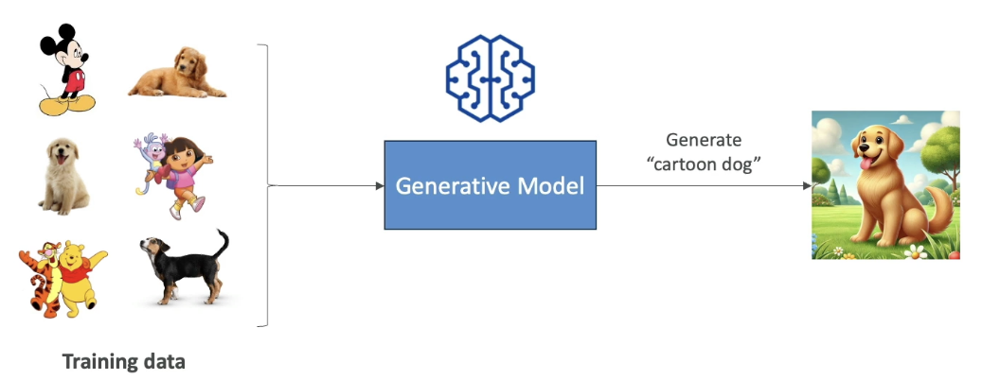
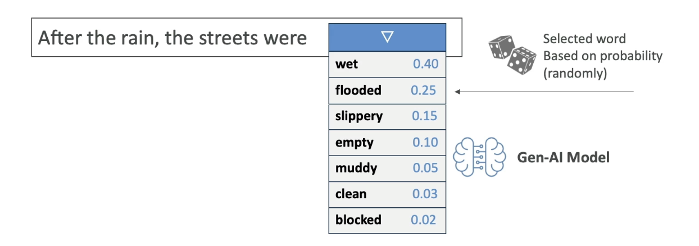
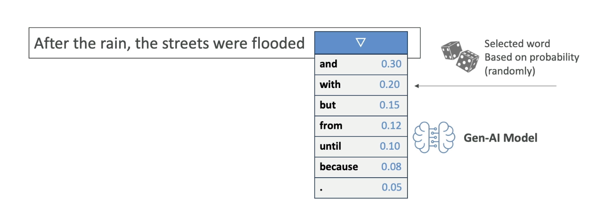
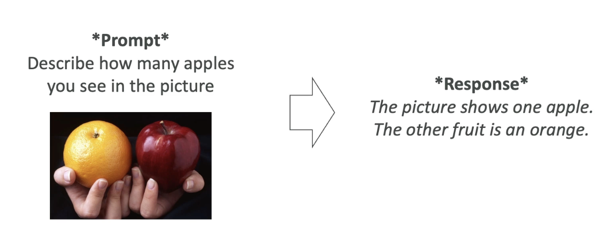
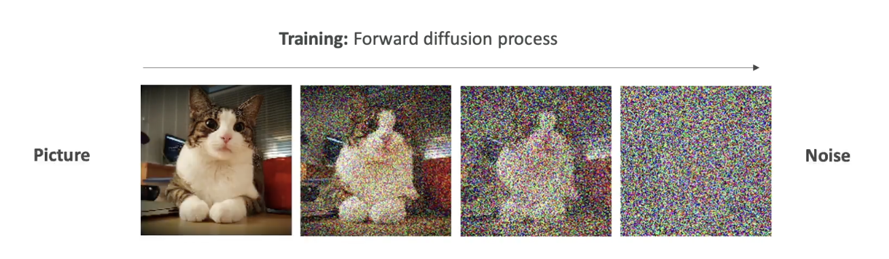

Amazon Bedrock and Generative AI¶
In this section, we are going to talk about generative AI, and amazon bedrock (which is the main service on AWS that does generative AI). This is actually one of the main topic of the exam and one of the fastest growing AWS service.
Section 1 : What is GenAI?¶
Introduction to Generative AI¶
Now that we are about to dive into Amazon Bedrock, which is a service for Generative AI (Gen AI) on AWS, let’s take a step back and understand what Gen AI actually is.
Generative AI is a subset of deep learning, which is itself a subset of machine learning, and in turn, a subset of artificial intelligence (AI).
What is Generative AI?¶
- Gen AI is used to generate new data that resembles the data it was trained on.
-
It can be trained on various types of data:
-
Text
- Images
- Audio
- Code
- Video
- And more
Example: If we train a Gen AI model on a lot of dog images and also on hand-drawn cartoons, then ask it to generate a “cartoon dog,” it will combine the two together and create a dog that looks like a cartoon. That is the power of Generative AI
- This is the power of Gen AI: it combines its knowledge into new, and unique ways.

- We are going to start with lots of unlabelled data (we will look later in the course, what it means by unlabelled data).
- We are going to train Foundational Model.
- Foundational Model (FM) are very broad, they are very big and very wide.
- FM can easily adapt to different kind of general tasks.
- A good foundational model can do:
- Text Generation
- Text Summarization
- Information Extraction
- Image Generation
- Can become a Chatbot
- Question Answering
- In general, we feed a lot of data into a foundational model, which has a option to do a lot of different tasks.
 Now let's talk about Foundational Models
Now let's talk about Foundational Models
Foundation Models¶
- In order to generate data, as we said, we need to have Foundational Model.
- FM are trained on a wide variety of inputs.
-
Now to train foundational models:
 Training foundation models:
Training foundation models: -
It requires millions of dollars, massive computing resources, and a lot of data.
-
It is typically built by large companies like:
-
OpenAI – (e.g., GPT-4o)
- Meta
- Amazon
- Anthropic
Open Source vs Commercial Models¶
-
Some foundation models are open source (free to use):
-
Example: Meta’s open-source efforts, Google’s BERT
-
Others are commercially licensed:
-
Example: OpenAI’s GPT models, Anthropic models
We will also see how to access these models on AWS as well.
Large Language Models (LLMs)¶
- LLMs are a type of AI that rely on foundation models and are designed to generate coherent human-like text.
- Example: ChatGPT using GPT-4
- These LLMs are usually very Big Models:
- They are trained on large corpus of text data
- They are computionally heavy and use Billions of parameters
- They are trained on Books, articles, websites, other textual data
- They can perform wide range of language related tasks, which involves:
- Translation, Summarization
- Question Answering
- Content Creation
- How does it work when we interact with the LLM
Interaction:
- We interact with the LLM by giving a prompt, for example : "What is AWS"
Note that, we will have dedicated section to understand about how to create prompt
- Then the model is going to leverage all the existing content that it has learned from to generate new content.
- The generated text is Non Deterministic,that means that for every user that is using the same prompt, will get different generated text. (it won't be the same answer every time, see the image below)

Non-Determinism in LLMs¶
So let's understand why though it is non-deterministic. Let's take an example:
Example sentence:¶
“After the rain, the streets were…”
When an LLM sees this prompt, it calculates a list of potential next words along with probabilities:
| Word | Probability |
|---|---|
| wet | 0.40 |
| flooded | 0.25 |
| slippery | 0.15 |
| empty | 0.05 |
| muddy | 0.05 |
| clean | 0.04 |
| blocked | 0.03 |
| ... | ... |
-
These are statistically likely next words, based on what the model has seen during training.
-
Then, an algorithm picks one of the words — maybe “flooded”.
So the model outputs:
“After the rain, the streets were flooded.”
This selection is based on random sampling with probabilities, not fixed logic. 
The process repeats for every next word.
Given:
“After the rain, the streets were flooded...”
The next word could be:
| Word | Probability |
|---|---|
| and | 0.40 |
| with | 0.25 |
| from | 0.15 |
| because | 0.05 |
| until | 0.05 |
. |
0.04 |
| ... | ... |
- All of these again, have associated probabilites, then the next word is going to be selected based on these probabilities.
- This is why when you ask the AI twice the same prompt, you may not get the same answers
- Because the sentence is determined with the statistical methods and not with the deterministic methods. 
Generative AI for Images¶
Let’s now understand how Generative AI works with images.
Gen AI is not limited to text. It can also generate images based on prompts or existing images, and it can even understand images to generate text descriptions.
Types of Image-Based Gen AI Tasks¶
1. Text-to-Image Generation¶
 - You give a prompt like:
- You give a prompt like:
“Generate a blue sky with white clouds and the word ‘Hello’ written in the sky.”
-
The Gen AI model uses that input to create a new image that visually matches the description.
-
The image is generated from scratch, not copied from a dataset.
2. Image-to-Image Translation¶
- You provide an input image and a style transformation instruction.
-
Example:
-
Input: A photo of someone playing the piano
-
Prompt: “Transform this into Japanese anime style.”
-
Output: A version of the same image that now looks like it was drawn in manga/anime style.
3. Image-to-Text (Visual Question Answering)¶
 - You give a picture and ask a question about it.
-
Example:
-
Image: One apple and one orange
-
Prompt: “How many apples do you see in the picture?”
-
Output:
“The picture shows one apple and the other fruit is an orange.”
- The model is capable of understanding the contents of the image and generating relevant, human-like answers.
Diffusion Models (Behind the Scenes)¶
One popular technique behind image generation is called a diffusion model. A well-known example is Stable Diffusion, which is based on this method.
Let’s break this down into two key processes:
1. Forward Diffusion (Training Phase)¶
-
We start with a clear image, like a picture of a cat.
-
Then, we gradually add noise to the image, step by step:
-
Slight noise → more noise → until the image becomes pure noise.

-
Eventually, the image becomes completely unrecognizable.
-
This teaches the model how images degrade into noise.
This is called the forward diffusion process.
This process is done for a lot of pictures. Once the algorithm is trained to take images and create noise out of it, then we do the opposite that is Reverse Diffusion
2. Reverse Diffusion (Image Generation Phase)¶
-
Now we want to generate a new image from scratch.
-
The model starts with random noise and a text prompt like:
“A cat with a computer”
-
The model then works in reverse:
-
It removes the noise step-by-step, each time refining the image.
-
Over multiple steps, the image gradually becomes clear.
-
Final output: A unique image of a cat with a computer.

This image is new — not taken from training data — but created using the knowledge learned from how real images look and how noise distorts them.
Summary of Key Concepts¶
- Gen AI creates new content (text, images, audio) from training data.
- Foundation models are trained on vast, diverse data to support multiple tasks.
- LLMs generate human-like text and are based on probability, not fixed rules.
- Non-deterministic output ensures variability in responses.
- Diffusion models generate images by reversing a noise process.
Section 2 : Amazon Bedrock - Overview¶
Introduction to Amazon Bedrock¶
Now that we've learned about Generative AI and foundation models, it's time to talk about Amazon Bedrock, the main service on AWS used to build generative AI applications.
Amazon Bedrock is a fully managed service, which means you don’t have to worry about managing the underlying infrastructure. It provides a simple way to access and interact with multiple foundation models through a unified interface.
Key Features of Amazon Bedrock¶
-
Fully managed service:
-
No need to manage infrastructure
-
AWS handles everything behind the scenes
-
Data privacy:
-
Your data stays within your AWS account
-
It is not used to retrain the underlying foundation models
-
Pay-per-use pricing model:
-
You only pay for what you use
-
Pricing details will be discussed later
-
Unified API:
-
One standardized method to interact with all foundation models
-
Simplifies application development
-
Multiple foundation models available:
-
Easily choose and configure models from different providers
-
Advanced features included:
-
RAG (Retrieval Augmented Generation)
- LLM Agents
- Security, privacy, governance, and responsible AI built-in in Amazon Bedrock
What type of Foundation Models are Available in Bedrock¶
Amazon Bedrock offers access to models from various top-tier AI providers:
- AI21 Labs
- Cohere
- Stability.ai
- Amazon
- Anthropic
- Meta
- Mistral AI
📌 More providers and models will continue to be added over time.
How Bedrock Handles Models¶
-
When you use a foundation model:
-
Bedrock creates a copy of the model instance for your exclusive use
-
This ensures data isolation and privacy
-
In some cases, you can fine-tune the model with your own data to better align it with your specific needs
-
Again, none of your data is sent back to the original model providers
Bedrock Architecture Overview¶
Let’s visualize how Bedrock works, using a simplified diagram explained during the lecture:
Core Flow:¶
 1. Users interact with an interactive playground
1. Users interact with an interactive playground
-
Users select the model to use
-
Input a question like:
“What is the most popular dish in Italy?”
-
Model responds with an answer, for example:
“Pizza and pasta”
-
We can have Knowledge Bases / RAG (Retrieval Augmented Generation)
-
This allows fetching external data to provide more accurate and relevant answers (will be covered in detail in later sections)
-
Model Fine-Tuning
-
You can upload and apply your own data to personalize the foundation model
-
All fine-tuning stays within your AWS account
-
Unified API Access
-
All apps communicate with Bedrock using a single API format
- Bedrock manages model selection and orchestration behind the scenes
Summary¶
- Amazon Bedrock makes it easy to build, test, and deploy Gen AI applications using various foundation models.
- It gives you data privacy, scalability, fine-tuning, and a unified developer experience.
- In the next lecture, we’ll explore hands-on practice with Bedrock’s interactive playground.
Amazon Bedrock - Hands On¶
Section 3 : Foundational Model¶
This section covers the key considerations and trade-offs involved in selecting a base foundation model within Amazon Bedrock. The choice of model depends on several factors including:
-
performance,
-
token capacity,
-
language support,
-
modality,
-
cost,
-
customization options, and
-
inference speed.
There is no single best option, as each model brings unique strengths and constraints. Therefore, experimentation and alignment with business needs are crucial.
Factors to Consider When Selecting a Model¶
Several key parameters influence the choice of a foundation model:
-
The required level of performance and capability
-
The maximum token context window, which determines how much input data the model can process
-
Whether the model supports multimodal input and output, such as text, image, audio, or video
-
The cost per 1,000 tokens or per request
-
The ability to perform fine-tuning with your own data
-
The licensing agreements, which may vary across models
-
The expected latency during inference
Some models are optimized for cost-effectiveness while others are designed to deliver high-accuracy outputs. Multimodal capabilities, in particular, are important for applications involving diverse media formats.
Amazon Titan and Its Role in the AWS Ecosystem (V Imp for Exam)¶
Since this course focuses on AWS, special attention is given to Amazon Titan, which is Amazon’s High-performing foundation model suite.
Titan supports text and image generation, as well as multimodal capabilities.
The model can be fine-tuned with custom datasets using a unified API within Amazon Bedrock.
Smaller versions of Titan may be more cost-effective but will likely have reduced knowledge coverage compared to larger, more capable models. Deciding which version to use is a balance between cost and quality.
Comparing Four Popular Foundation Models¶
The following comparison covers four commonly available models on Amazon Bedrock:
| Model | Max Tokens | Features | Use Cases | Pricing (per 1K tokens) |
|---|---|---|---|---|
| Amazon Titan (Text Express) | 8K | High-performance text model, supports 100+ languages | Content creation, classification, education | Input: $0.0008, Output: $0.0016 |
| Llama 2 (70B-chat) | 4K | Suited for large-scale tasks and English dialogue | Text generation, customer service | Input: $0.0019, Output: $0.0025 |
| Claude 2.1 | 200K | High-capacity text generation, multilingual | Analysis, forecasting, document comparison | Input: $0.008, Output: $0.024 |
| Stable Diffusion (SDXL 1.0) | 77 Tokens/Prompt | Image generation only | Image creation for advertising, media... | $0.04–$0.08 per image |
Observations Based on the Comparison¶
-
Claude 2.1 offers the largest context window (200K tokens), making it suitable for processing large codebases, books, or documents. This is critical in use cases that require deep memory of long inputs.
-
Amazon Titan is significantly cheaper than both Llama 2 and Claude, while still supporting multilingual capabilities.
-
Llama 2 provides strong performance for conversational and English-based tasks but has a smaller context window and slightly higher cost than Titan.
-
Stable Diffusion is purely for image-related generation and accepts shorter prompts. Its cost is per image rather than per token, and it supports features like object removal, background replacement, and visual modification.
Final Thoughts on Model Selection¶
While all these models are converging toward similar capabilities, the real decision comes down to testing each one for your specific needs:
-
Claude may be preferred for heavy document analysis and large prompt sizes.
-
Titan offers a strong balance between performance, cost, and multilingual support.
-
Llama 2 is ideal for scalable dialogue and customer-facing tasks.
-
Stable Diffusion is the go-to for image and creative generation needs.
Pricing is a key differentiator. Claude is the most expensive, while Amazon Titan offers the lowest cost per token. Rapid cost accumulation is possible with large-scale inference or continuous image generation, so monitoring usage is essential.